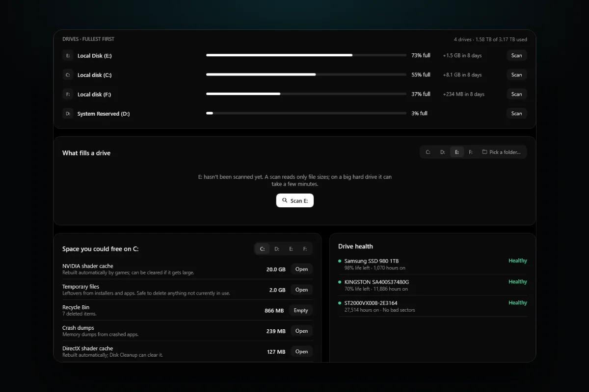

PC problems · Storage and memory
What is taking up space on my C drive in Windows 11
My C drive grew from 198 to 271 GB in seven weeks, 68 GB of it in one day, and my Steam games aren't even on it. How to see what is taking up space on your C drive in Windows 11, what you can safely clear, and what to leave alone.

The short answer
Open Settings > System > Storage to see what fills your C drive by category, then Cleanup recommendations to remove temporary files, large unused files and old apps. Disk Cleanup's Clean up system files removes old update files. Big hidden files like hiberfil.sys can be shrunk safely. Never delete WinSxS by hand.
On 23 September my C drive had 198 GB used. Seven weeks later it had 271 GB, out of 446. On 30 October alone it grew by 68 GB. That morning Steam downloaded a 58 GB game update, which looks like the obvious answer. It isn't, because every Steam game I have lives on my E drive. Something else filled C, and I'd never have known the day without a record. Here is how to see what is taking up space on your C drive in Windows 11, what you can safely clear, and what to leave alone.
How RigSight caught it
Windows shows what fills a drive today. RigSight also keeps track of how it got there. Its Storage page lists the drives inside your PC, fullest first, with USB and network drives below them, and shows how much each has grown over the last few days, such as +3.7 GB in 8 days. A drive that fills fast stands out before it is full. With admin rights, each drive also shows its health in plain words.
Below the drives, Space you could free lists what RigSight found. That can include temporary files, the Windows temp folder, downloads you haven't touched in 90 days, the Windows Update cache, NVIDIA, AMD and DirectX shader caches, crash dumps, a previous Windows installation and the Recycle Bin. Nothing is deleted for you. Each line opens its folder or a list to review, and only the Recycle Bin has an Empty button.
Scan a drive and RigSight shows its folders as a list and a map side by side, coloured by kind of file, and you can open any folder down to its files or switch to the largest files. A scan also finds big files you haven't changed in a year. Each drive keeps its last scan after a restart, so you can come back to it. On the Games page every game shows its size and the drive it sits on, and you can uninstall it through its own launcher. The Timeline notes when a drive's used space jumped or dropped within a day, and by how much.
That's how I found the 30 October jump, and why I knew not to blame Steam. RigSight records each drive's used space every day. Steam's own download log, which RigSight reads, says what Steam fetched, and Steam's library list says which drive each game sits on. The rest of the 68 GB is what a scan of C is for. RigSight is free and open source.
What is taking up space on my C drive in Windows 11? Check Settings first
- Open Start > Settings > System > Storage.
- Wait a few seconds while Windows adds up each category for the C drive.
- Click Show more categories to see all of them, biggest first.
- Click any category to see what is inside. Apps lists installed apps by size, Temporary files lists what can be removed, and Other lists the biggest folders Windows couldn't sort.
This answers most cases straight away. A huge Apps figure usually means games. A huge Other figure is often a game library or an app's data folder. A big System & reserved figure is Windows itself plus a few large files covered further down.
Clear what Windows already suggests
- In Settings > System > Storage, open Cleanup recommendations.
- Look through Temporary files, Large or unused files, Files synced to the cloud and Unused apps.
- Tick only what you are sure about and press Clean up in each section.
Check the Downloads folder before you tick it. Windows lists it with temporary files, but it often holds installers and documents you meant to keep.
Turn on Storage Sense
Storage Sense clears temporary files and old Recycle Bin items for you. Turn it on in Settings > System > Storage > Storage Sense. By default it runs when the drive is low on space, and you can set it to run every day, week or month. It leaves your Downloads folder alone unless you tell it otherwise, and it only looks after the C drive. Microsoft says it can't run until you have been signed in and online for more than 10 minutes, so don't expect it to work the moment you switch it on.
Remove old update files with Disk Cleanup
- Press Start, type Disk Cleanup and open it.
- Choose the C drive and press OK.
- Press Clean up system files and choose C again.
- Tick Windows Update Cleanup, Temporary files and anything else you recognise, then press OK and Delete Files.
If you upgraded Windows in the last ten days, a previous Windows installation shows here too, often many GB. Deleting it is fine once the new version works, but you lose the option to go back.
The big system files, and which are safe to shrink
hiberfil.sys
This hidden file in the root of C holds your memory while the PC hibernates. Microsoft says it is roughly the size of your RAM, so 16 or 32 GB on a gaming PC. If you never use hibernate, open Command Prompt as administrator and run powercfg.exe /hibernate off. The file goes away. You also lose Fast Startup and hybrid sleep, so a cold boot can take a little longer. Run the same command with on to bring it back. Don't delete the file by hand.
pagefile.sys
The page file is where Windows puts memory that doesn't fit in RAM. It can be several GB. Leave it on and let Windows manage its size. Turning it off can make apps close when memory runs out.
Restore points
System Restore keeps snapshots of Windows that can grow large. Press Start, type Create a restore point, pick the C drive and press Configure to see how much they use and to lower the limit. Keep some space for them, as they are your way back after a bad driver or update.
WinSxS
The WinSxS folder inside Windows looks huge in Explorer, partly because many of its files are the same files you see elsewhere in Windows, counted twice. Microsoft warns that deleting files from it can stop your PC from booting or updating. Shrink it only with Windows' own tools, such as Disk Cleanup's Windows Update Cleanup. Windows also trims it by itself over time.
Games, caches and your own files
On a gaming PC, games are usually the biggest thing on C. Each launcher has its own place to see sizes and uninstall. In Steam, open Settings > Storage. It shows each game's size per drive, and you can tick a game and press Move to put it on another drive without downloading it again. Uninstall games you have finished through their launcher, so their save data and leftovers are handled properly.
Graphics drivers keep a shader cache that can reach several GB. Games and Windows rebuild it on their own, so clearing it is safe, but the next launch of each game may take longer while it builds again. Disk Cleanup has a DirectX Shader Cache option for this.
For your own files, OneDrive's Files On-Demand keeps files online and frees the local copy until you open one. Videos, old phone backups and the Downloads folder are the usual surprises, and typing size:gigantic into Explorer's search box while C is open finds files over 4 GB on the whole drive.
Start with Settings > System > Storage and Cleanup recommendations, then Disk Cleanup's system files. If C is still tight after that, move a game library to another drive. If the drive also feels slow or throws errors, run an SSD health check.
Questions people ask
Why is my C drive full for no reason?
Windows updates, temporary files, browser and shader caches, restore points and your Downloads folder grow on their own. Games often install to C by default and get large updates. Settings > System > Storage shows which of these is biggest on your PC.
What is taking up so much space on my C drive under Other or System?
System & reserved holds Windows itself, the page file, the hibernation file and restore points. Other holds folders Windows can't sort into a category, often game folders or app data. Click it to see the biggest folders. Shrink these with the Windows settings below, never by deleting files from the Windows folder.
Is it safe to delete the WinSxS folder?
No. Microsoft warns that deleting files from WinSxS can leave your PC unable to boot or update. Let Windows shrink it with Disk Cleanup's Windows Update Cleanup instead.
Can I delete hiberfil.sys and pagefile.sys?
Don't delete either by hand. hiberfil.sys is about as big as your RAM and goes away if you turn hibernation off, which also turns off Fast Startup. Leave pagefile.sys for Windows to manage.